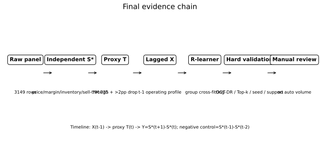
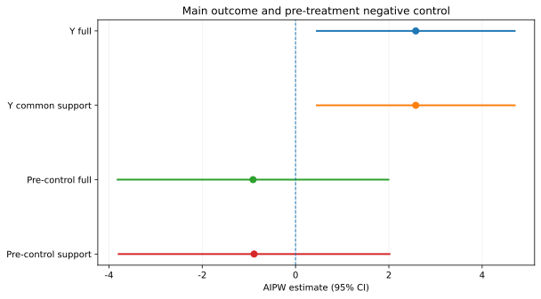
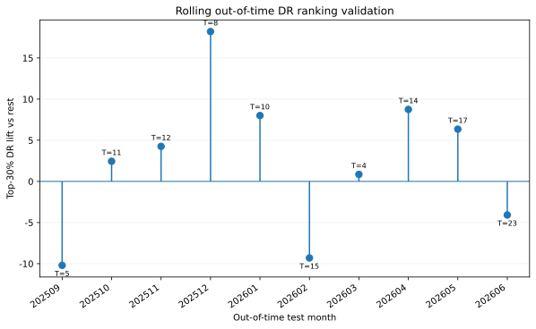
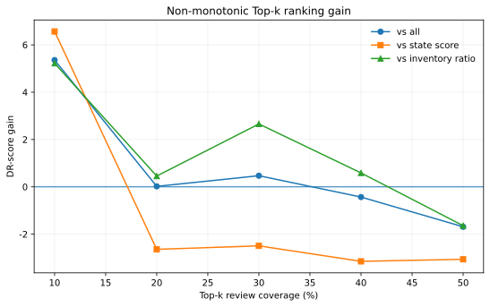
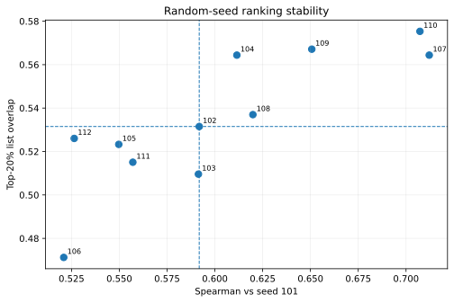
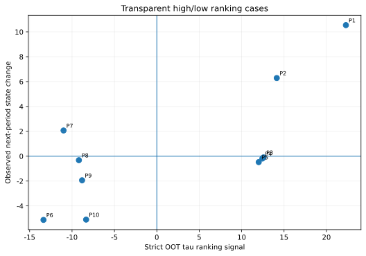

卷烟品规供给收缩差异化复核方法研究
摘 要：针对卷烟品规供给收缩对象主要依赖经验或单指标筛选、不同经营状态品规易被统一调控的问题，构建面向月度人工会商的异质性效应排序复核方法。基于某市2025年1月至2026年6月品规经营面板，从3149条原始品规×月份记录中，要求当月及上月订单满足率可观测、构造下一期结果并完成时间前置后，形成177个品规1825条分析观测，其中代理收缩事件253条。结果评分S*仅由顺价指数、毛利率、存销比和动销率4个处理定义独立指标构成；动态经营协变量统一滞后1期，采用R-learner框架和LightGBM基学习器估计异质性排序，并通过滚动时间外双重稳健验证、Top-k增益、随机种子稳定性、共同支持域AIPW及处理前负对照检验结果可靠性。共同支持域内平均效应为2.577（95%CI：0.456～4.699），处理前负对照为−0.889（95%CI：−3.792～2.014），支持域外处理观测占0.40%。10个严格时间外测试月中，Top-30%清单有7个月DR增益为正，月均增益为2.528，但按月份聚类bootstrap的95%区间为−5.989～5.928；Top-30%相对于存销比排序增益为2.657，但相对于综合状态评分排序低2.494。随机种子下tau排序Spearman相关系数中位数为0.592，Top-20%名单重合率为53.2%。结果表明，该方法能够提供不同于单一库存指标的复核信息，但尚未稳定超过综合状态评分，适合用于辅助人工复核而非自动生成供给收缩或减量指令。
关键词：卷烟品规；供给收缩；R-learner；异质性效应；货源投放；人工复核
Abstract: A heterogeneous-effect ranking method was developed to support monthly manual review of cigarette specifications under proxy supply-contraction events. The raw panel contained 3,149 specification-month records from January 2025 to June 2026. After requiring observable current- and previous-month fulfillment rates, constructing next-period outcomes, and temporally lagging operating covariates, 1,825 observations from 177 specifications were retained, including 253 proxy contraction events. A treatment-definition-independent market-state score was constructed using price-order index, gross margin, inventory-to-sales ratio, and sell-through rate. Heterogeneous rankings were estimated with an R-learner using LightGBM base learners and evaluated by rolling out-of-time doubly robust validation, Top-k gains, random-seed stability, common-support AIPW re-estimation, and a pre-treatment negative control. The common-support AIPW estimate was 2.577 (95% CI: 0.456–4.699), whereas the pre-treatment negative-control estimate was −0.889 (95% CI: −3.792–2.014). Only 0.40% of treated observations lay outside the empirical common-support region. Across ten strict out-of-time test months, the Top-30% list achieved positive doubly robust gains in seven months and a mean gain of 2.528, although the month-clustered bootstrap 95% interval (−5.989 to 5.928) crossed zero. The Top-30% list outperformed inventory-ratio ranking by 2.657 points but underperformed the composite state-score ranking by 2.494 points. Median seed-to-reference Spearman correlation was 0.592 and median Top-20% list overlap was 53.2%. The method therefore provides information beyond a single inventory indicator but is not sufficiently stable to replace the composite state score or manual review.
Keywords: cigarette specification; supply contraction; R-learner; heterogeneous effect; cigarette allocation; manual review
0 引言
卷烟商业企业月度货源投放需要同时兼顾市场需求、终端满足、社会库存与价格状态。部分品规在库存压力较高、价盘承压时需要放缓供给节奏，而另一些品规本身货源偏紧，继续收缩可能进一步降低终端满足水平。因此，管理难点并不是寻找一个适用于全部品规的收缩阈值，而是从大量品规中识别出值得优先复核的对象，并明确模型输出的证据边界。
已有研究围绕市场状态评价、客户或品规画像、精准投放和销量预测形成了较丰富的方法体系。这些方法能够回答“市场处于什么状态”“对象具有何种经营特征”以及“资源如何配置”等问题，但对于已观察到的供给收缩行为，仍较少直接检验不同品规经营画像是否对应不同的后续状态变化。尤其在观测数据场景中，调控动作往往并非随机发生，若直接根据样本内模型排名形成决策，容易受到处理选择、时间信息泄漏和样本外泛化不足的影响。
基于此，本文将研究目标限定为“差异化复核排序”，不直接输出具体减量幅度。首先，以处理定义独立的4项市场状态指标构建S*，并将所有动态经营协变量前置到t−1期；其次，采用R-learner残差化框架学习代理供给收缩事件下的条件异质性排序；最后，通过严格滚动时间外双重稳健验证、Top-k业务基线比较、随机种子稳定性、共同支持域重估及真正处理前负对照检验排序可靠性。
1 材料与方法
1.1 数据来源与样本构建
数据覆盖某市2025年1月至2026年6月品规层级经营记录，原始面板共3149条“品规×月份”观测。为避免将缺失满足率直接视为未处理，代理处理变量仅在当月和上月订单满足率均有观测时定义；同时要求下一期状态评分可计算，并对动态协变量执行1期滞后。完成上述时间对齐和结果变量1%～99%稳健截尾后，形成177个品规1825条分析观测，其中代理供给收缩事件253条。
| 指标 | 原始/最终值 | 说明 |
|---|---|---|
| 原始面板 | 3149条 | 2025-01至2026-06品规×月份 |
| 最终分析样本 | 1825条 | 满足T、Y及t−1画像要求 |
| 覆盖品规 | 177个 | 进入最终R-learner分析 |
| 代理收缩事件 | 253条 | 当月横截面P35且较上月下降>2个百分点 |
Tab. 1 Composition of the final analytical sample
1.2 处理定义独立状态评分
为避免处理—结果循环构造，S*不再使用订单满足率、投放量等处理定义字段，仅使用顺价指数、毛利率、存销比和动销率。各指标在每个ym横截面内转换为百分位，存销比按反向指标处理，缺失指标赋予中性百分位0.5，4项等权得到：
4项指标原始非缺失覆盖率分别为顺价指数100.0%、毛利率60.9%、存销比60.9%和动销率53.1%。
1.3 代理供给收缩事件与结果变量
设Fit为品规i在月份t的订单满足率，Q0.35,t为该ym全部有效品规满足率的35%分位数，则：
T仅是根据经营数据识别的代理收缩事件，不等同于正式调控审批日志。结果变量定义为：
处理前负对照定义为Yitpre=Si,t−1*−Si,t−2*。
1.4 R-learner异质性效应排序
动态经营画像统一取t−1期。采用按品规分组5折交叉拟合估计结果回归m(X)=E(Y|X)和倾向得分e(X)=P(T=1|X)，再对Y和T进行残差化：
本文采用LightGBM作为m、e和τ的基学习器。该实现属于R-learner异质性效应排序，不再误称为“因果森林”。
1.5 四项硬验证
为避免样本内分组自证，设置滚动时间外DR验证、Top-k业务基线比较、12个随机种子稳定性和共同支持域AIPW重估。测试月双重稳健伪结果为：

Fig. 1 Final research design for differentiated specification review
2 结果与分析
2.1 共同支持域AIPW与处理前负对照
完整分析样本AIPW为2.577（95%CI：0.456～4.697），共同支持域内为2.577（95%CI：0.456～4.699），仅0.40%的处理观测位于经验共同支持域外。真正处理前负对照在支持域内估计为−0.889（95%CI：−3.792～2.014），区间跨0。

Fig. 2 AIPW main effect and genuine pre-treatment negative control
| 结局 | 样本 | n | 处理数 | 估计 | CI下限 | CI上限 |
|---|---|---|---|---|---|---|
| 下一期状态变化Y | 完整样本 | 1825 | 253 | 2.577 | 0.456 | 4.697 |
| 下一期状态变化Y | 共同支持域 | 1824 | 252 | 2.577 | 0.456 | 4.699 |
| 处理前负对照Ypre | 共同支持域 | 1686 | 229 | -0.889 | -3.792 | 2.014 |
2.2 严格滚动时间外验证
2025年9月至2026年6月形成10个严格时间外测试月，共1059条测试观测。Top-30%清单相对其余对象的月均DR增益为2.528，10个月中7个月为正；按测试月份聚类bootstrap得到95%区间为−5.989～5.928，仍跨0。

2.3 Top-k增益与业务基线比较
Top-k评价呈明显非单调性。Top-30%相对测试集总体和存销比分别为0.470和2.657，但相对综合状态评分为−2.494。R-learner不能被表述为全面优于综合状态评分，其更合适的位置是作为状态评分后的第二层复核信号。

2.4 随机种子稳定性
11次重复训练与基准排序的Spearman相关系数中位数为0.592，Top-20%名单重合率中位数为53.2%，说明精确排名对随机初始化仍较敏感。

2.5 代表性品规时间外案例
严格时间外且T=1的观测中，仅按模型tau排序固定选取最高5例和最低5例，不按下一期结果挑选。高排序不意味着下一期一定改善，低排序也存在实际改善反例。

3 讨论
3.1 从“模型替代规则”转向“模型叠加复核”
最终实验表明，R-learner相对于存销比单指标可提供增量信息，但相对于多指标综合状态评分并未形成稳定优势。异质性模型更合理的位置是在状态评分基础上增加第二维证据，而不是替代状态评分。
3.2 平均效应为正不等于个体排序可靠
共同支持域内AIPW区间未跨0、真正处理前负对照跨0，但严格时间外Top-30% bootstrap区间仍跨0，且随机种子Top-20%名单重合率约53%。平均效应证据与个体排序能力应分开解释。
3.3 数据缺失与结果评分边界
毛利率和存销比覆盖率约60.9%，动销率约53.1%。中性分位填补可能压缩真实差异，后续需比较仅按有效指标平均、多重插补等策略。
3.4 业务应用边界
现阶段建议输出“状态评分＋异质性排序＋证据标记”的月度复核清单，不自动生成减量幅度。满足率突然降至0的极端事件应先核查断货、策略性停供和数据缺失。
4 结论
（1）共同支持域内AIPW为2.577（95%CI：0.456～4.699），支持域外处理观测占0.40%；真正处理前负对照为−0.889（95%CI：−3.792～2.014）。
（2）Top-30%清单10个月中7个月DR增益为正，月均增益2.528，但bootstrap 95%区间跨0；相对于存销比排序增益2.657，相对于综合状态评分低2.494。
（3）随机种子下tau排序Spearman中位数0.592、Top-20%名单重合率53.2%。当前方法最适合形成状态评分基础上的第二层人工复核信号，不宜自动确定收缩对象或减量幅度。
参考文献
[1] 黄敏, 梁艳, 向云海, 等. 基于智能集成与阈值训练的卷烟市场状态评价体系研究——以南充市为例[J]. 中国烟草学报, 2025, 31(5):155-166.
[2] 姜思明, 刘荣, 谭升达, 等. 基于零售终端数据治理的卷烟市场状态监测研究[J/OL]. 烟草科技, 2026. DOI:10.16135/j.issn1002-0861.2025.0510.
[3] 谭琛, 周欣然, 栾晓宇, 等. 基于高维精准画像与深度学习的卷烟零售户动态分档研究[J]. 中国烟草学报, 2024, 30(3):1-9.
[4] 金文蔚, 虞华东, 沈振凯, 等. 数据驱动的卷烟品规精准投放策略研究[J]. 中国烟草学报, 2025, 31(6):152-160.
[5] Nie X, Wager S. Quasi-oracle estimation of heterogeneous treatment effects[J]. Biometrika, 2021, 108(2):299-319.
[6] Chernozhukov V, Chetverikov D, Demirer M, et al. Double/debiased machine learning for treatment and structural parameters[J]. The Econometrics Journal, 2018, 21(1):C1-C68.
投稿前仍需完成参考文献逐条核验、作者与基金信息补录、品规名称保密审查和版面字数压缩。